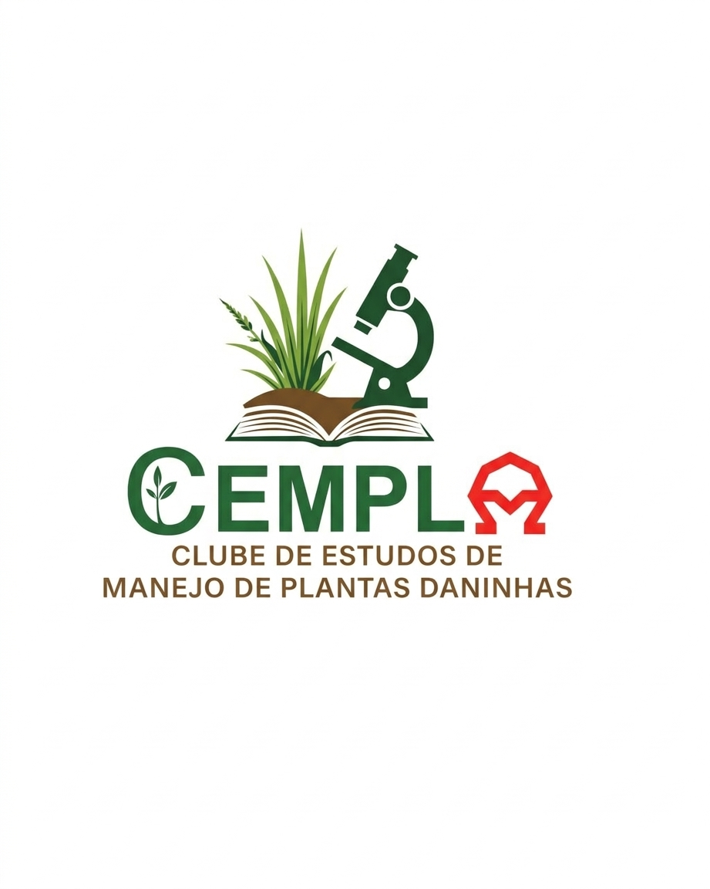
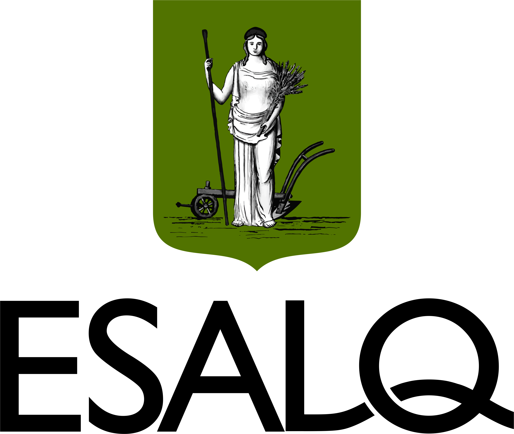

Acervo completo · APG IV
Todas as Famílias
0 espécies


Acervo digital de exsicatas de plantas daninhas, desenvolvido como ferramenta pedagógica de apoio à identificação botânica na disciplina LPV0671 — Controle das Plantas Daninhas.